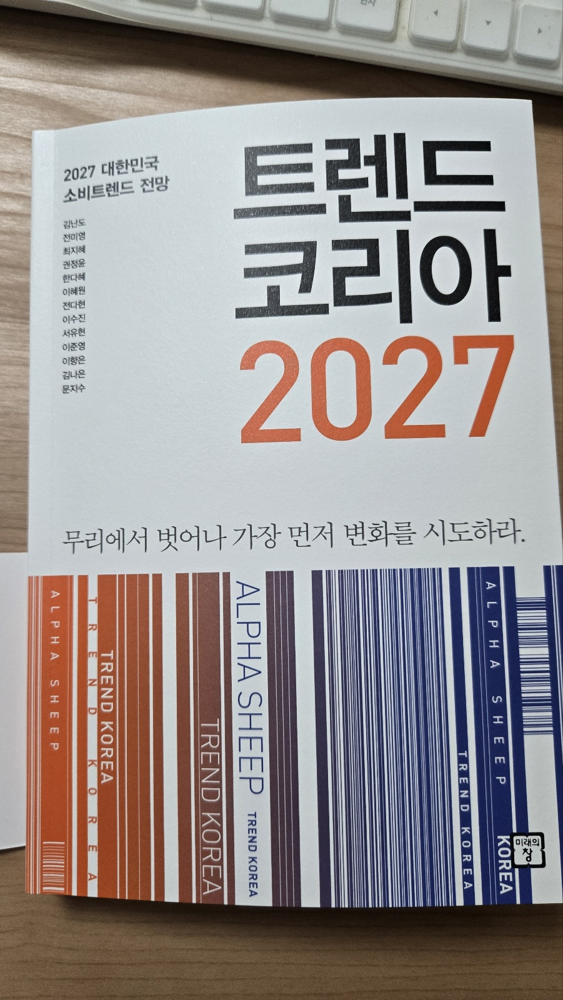

일상의 재발견
더 많은 자극보다 필요한 것은 무엇일까요? 내 시간과 관계의 가치를 다시 살펴보세요.
2027 대한민국 소비트렌드 전망
익숙한 흐름에서 한 발 벗어나
새로운 가능성을 발견하는 열 가지 시선.

01 / THE BOOK
『트렌드 코리아 2027』은 우리 일상과 소비, 일하는 방식의 변화를 ‘ALPHA SHEEP’라는 열 글자로 조명합니다.
자극이 넘치는 사회의 권태부터 AI 시대에 더 중요해지는 인간의 판단과 안목까지. 열 가지 키워드를 통해 내 삶과 비즈니스의 다음 장면을 생각해보세요.
김난도 외 지음 · 미래의창02 / THE TEN TRENDS
키워드를 눌러 상세 설명과
사업 기회·실행 전략을 읽어보세요.
03 / YOUR NEXT CHAPTER
더 많은 자극보다 필요한 것은 무엇일까요? 내 시간과 관계의 가치를 다시 살펴보세요.
새로운 도구를 내 방식으로 활용해보세요. 작은 실행이 다음 가능성을 열어줍니다.
무엇을 고르고, 왜 선택했나요? 나의 경험과 기준이 차별화의 출발점이 됩니다.